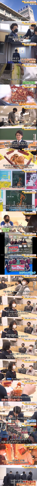
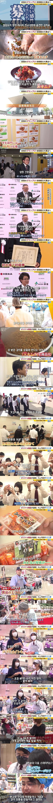

일본 고등학교 동아리는 엄청 본격적이네요. 절임 음식 대회 참가교가 16개나 되는 것도 신기합니다.


일본 고등학교 동아리는 엄청 본격적이네요. 절임 음식 대회 참가교가 16개나 되는 것도 신기합니다.
이쯤되면 김구선생님도 웃으면서 근데 이정도까지 바란건 아니었는데 할듯
쿨 돌았나?
존나 재밌겠다
의외로 콩고기 김치 맛있을듯
사진처럼 밥에 얹어먹기 좋겠는데
일본 신기한게 마츠리 가보니까 김치 파는 노점이 엄청 있더라
꽤 대중적으로 먹나봄 김치를
근데 일본은 동아리가 ㅈㄴ 본격적이네 우리는 학생부 가라치기로 유명무실하고 다 야자하는데 ㅋㅋ
혹시 몇년생임? 그정도는 아녔는데
너넨 어떻게 했는데?
근데 진짜 몇년생임 그정돈 아닌디
그래서 몇년생이세용??대답을 피하시는거 같아서용
이게 뭐라고 대답을 피하겠음? 97년생인데; 공립 사립 자사 다 다르겠지 속 존나 보이네 ㅋㅋ 님은 몇년생인데요
97년생이고 매주 금요일 동아리시간마다 정해진 활동 각자 알아서 함. 국궁, 밴드, 관악, 봉사, 댄스 여럿 있었음. 아 동아리 활동은 아녔는데 2학년인가 3학년부터 학교축제 전야제 생겨서 음식 만들어서 팔기도 하고 그랬다.
좋은 학교 다녔네 ㅋㅋ
91년생인데 우리땐 저랬음
ㄹㅇ 저건 좀 부러움
우리 학교는 나 입학하기전이 있긴 있었는데 사실상 시간때우기용이였고 선생이 감독 안하니까 싸우기도 많이 싸우고 막판에 목공 두꺼운 커터칼로 배찌른 인간 나와서 영구 폐지 됨
안타깝지만.. 너희학교가 문제였던것일뿐..
일본도 너희학교 같은 곳이 있을거야
잘하는거니까 tv에 나오지
우리는 대회하면 싸움나나?
동아리 부장 묘하게 해리포터 닮았네 ㅋㅋ
동아리 왜 가입했나? “누가 있을지 궁금해서”
뛰어넘을 수 있을까..? 센빠이노 기무치…
한국에도 거의 없는 김치 동아리를 ㅋㅋ
깊게 파고 들어가는 부분은 일본애들이 전세계 최고인듯
1인당 김치소비량 우리보다 높다던데 ㄷㄷ
아니 너무 본격적이잖아?
취업 포토폴리오 미쳤네;
이러면 우리나라도 낫토부 같은 거 만들어야하는 거 아니냐 ㅋㅋ
저정도면 우리나라에서 뭔가 보내줘야할거 같은 마음이 들자나 ㅋㅋ
학생 때 공부 이외에 무언가에 열정을 갖고 파고든 경험을 해본 사람들은 뭘 해도 잘 할 듯
생각보다 진심이라 보기 좋네